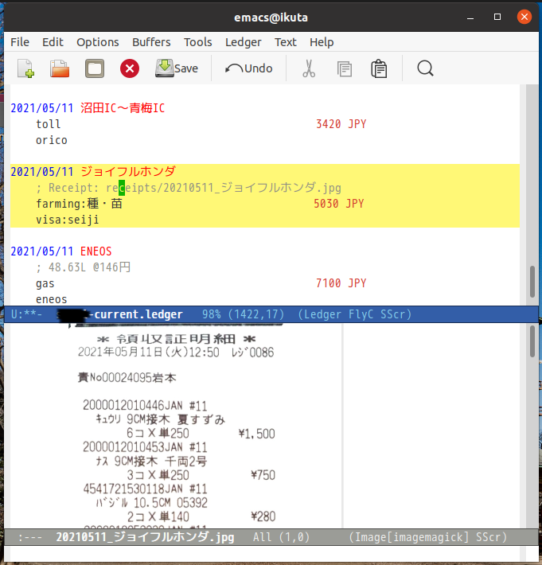

Ledger – Emacs内でレシート参照
NPO法人 の経理をLedgerでやれるかどうかを 頭の体操 として取り組んでいます。
ここではそれと直接の関係はありませんが、 NPO法人の会計報告では 領収書類 との関係も見られる？ 監督官庁が検査したりしない、または公開されないとしても、 事務局としては領収書をデジタル化してLedger内で閲覧できるようにするのはとても重要
EmacsでLedgerを動かしている場合に限定して説明します。
1 家計
プライベートな家計では、 すべてのレシートをデータ化して保存する意味はほとんどありません。 重要なレシートだけを後々チェックできるようにしておく、そんな運用をしています。
たとえば、春先にどのホームセンーでどんな苗をいくつ購入したか、などの記録を Ledgerから見えるようにできるととても便利。
例えば、ホームセンター・ジョイフルホンダで苗を購入しました。来年のためにもちゃんとした記録が必要です。
一つの方法は次のようにコメントに書いておく方法：
2021/05/11 ジョイフルホンダ
; 税抜価格 キュウリ(@250x6), ナス(@250x3), ピーマン(@250x3), トマト(@250x7), バジル(@140x2)
Expenses:Farming:種・苗 5030 JPY
Liabilities:Visa
次が推奨する方法、 もう一つの方法、これを推奨しますが、レシートをそのままLedgerと連携させる方法。レシートの画像ファイル
2021/05/11 ジョイフルホンダ
; Receipt: receipts/20210511_ジョイフルホンダ.jpg
Expenses:Farming:種・苗 5030 JPY
Liabilities:Visa
レシートの画像ファイルの相対パスとファイル名は、トランザクションの2行目に、
タグ Receipts の 値 として receipts/20210511_ジョイフルホンダ.jpg を書いておきます。
メインのLedgerファイルと同じディレクトリに receipts というレシート格納用のディレクトリを作っておいて、その下に「日付支払先」形式でレシートの画像ファイルがおいてある。
ここまでは以前にも紹介した（。。。）
1.1 Emacs内でレシート画像を見る
Ledgerを使っているとEmacsの中で、このレシートを画像として閲覧したい
そのためにとても便利で簡単なのはEmacsにビルドインされている ffa-bindings を使う方法。
1.2 init.elに追記
次の1行を .emacs.d/init.el の適当な場所に追加します。
(ffap-bindings)
設定はこれだけ。
使い方は、
レシートファイル名の上にカーソルを置いて C-x C-f RET するとファイルがEmacsの新しいバッファ内で表示されます。もとのバッファに戻るには C-x b (change buffer）とかします。
init.elへの追加が面倒なら M-x ffap-bindings してもOK。

図1: Emacsでトランザクション内のレシート画像を表示
2 ちなみに
図1ではアカウントのエリアス（別名）を使って書かれています。エリアスは
~/.ledgerrc 内で次のように設定されています。
alias toll=Expenses:Cars:Toll alias orico=Liabilities:OricoCard alias farming=Expenses:Farming alias gas=Expenses:Cars:Gasoline alias eneos=Liabilities:EneosCard
よく使うアカウントは自分なりにわかりやすい別名を定義しておけば、記帳の手間が大いに省けます。